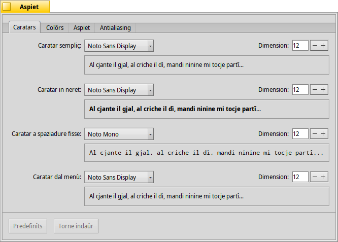
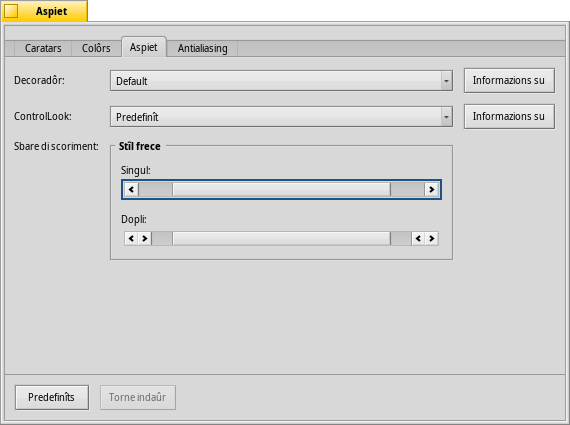

Aspiet
Aspiet
| Deskbar: | ||
| Posizion: | /boot/system/preferences/Appearance | |
| Impostazions: | ~/config/settings/system/app_server/appearance ~/config/settings/system/app_server/fonts |
Lis preferencis di Aspiet ti permetin di cambiâ cualchi aspiet de part visuâl di Haiku.
 Caratars
Caratars

Haiku al definìs trê caratars standard par diferentis finalitâts. Tu tu stabilissis lis dimensions e i gjenars di caratar fis, neret e normâl che a vignaran doprâts sul sisteme. Sore chescj, e je ancje une impostazion separade pal caratar doprât tai menù.
Instalazion di gnûfs caratars
I gnûfs caratars che no rivin come part di un pachet .hpkg regolâr, a puedin jessi instalâts copiantju intune sot-cartele, in acuardi cul lôr gjenar di caratar(psfonts o ttfonts), inte lôr rispetive cartele non-packaged (viôt l'argoment Disposizion dal filesystem). Pai caratars TrueType al sarà:
| /boot/system/non-packaged/data/fonts/ttfonts/ | par caratars disponibii par ducj i utents. | |
| /boot/home/config/non-packaged/data/fonts/ttfonts/ | par caratars disponibii dome pal to utent. |
Colôrs

Inte schede , tu puedis cambiâ i colôrs di diferentis parts de interface utent. Il colôr al acete ancje il strissine e mole di altris programs, permetint cussì di strissinâ parsore i colôrs, par esempli, di WonderBrush, Icon-O-Matic o il panel Fonts.
Decoradôrs dai barcons

I decoradôrs a determinin l'aspiet e il compuartament dai barcons e di ducj i elements de interface utent grafiche. Pal moment Haiku rive cun dome un decoradôr predefinît. Se tu vessis di cjatâ e instalâ altris decoradôrs, tu podarâs sielzi un diferent dal menù a tende.
Il decoradôr predefinît di Haiku al permet di stabilî il stîl des frecis de sbare di scoriment: o frecis singulis ae fin des sbaris di scoriment par sparagnâ spazi, o doplis frecis — la maniere tradizionâl di BeOS — che potenzialmentri a sparagnin un pôcs di spostaments di mouse cuant che si scor sù e jù o çampe e drete...
Antialiasing

La schede e furnìs variis impostazions su ce mût che lis robis a vegnin visualizadis sul schermi.
Miorament dai glifs
Un ativât al inlinee dutis lis letaris in mût che i lôr ôrs, verticâi e orizontâi, a restedin juste jenfri doi pixel. Il risultât al è un contrast perfet, in particolâr cuant che si à a ce fâ cul blanc e neri. Il test al aparìs plui net. E je ancje une impostazion dome par che e jude soredut cui dispositîfs a basse risoluzion come i netbook. I caratars piçui a puedin aparî brututs cuant che il miorament al è ativât, ma cun cheste impostazion si varà in ogni câs il vantaç dal miorament pai editôrs di test e pal terminâl.
Viôt la diference fate dal miorament in chestis caturis di schermi ingrandidis:
 Miorament: disativât |  Miorament: ativât |
Al va evidenziât ancje che ducj i barcons di Magnify in cheste pagjine a son visualizâts cu lis varis opzions. Cussì si pues vê une impression gjenerâl e reâl des impostazions, confrontant par esempli il titul de schede in neret o il test "33 x 15 @ 8 pixels/pixel".
Gjenar di antialiasing
Une altre tecniche par miorâ la visualizazion e je l' Antialiasing, che al supuarte dute la grafiche vetoriâl e il test. Al pulìs lis liniis cambiant il colôr di cierts pixel. A son doi metodis par fâlu:
al cambie la intensitât dai pixel tal ôr.
al fâs un lavôr ancjemò miôr, in particolâr cui visôrs LCD (a elevade risoluzion). Al puest de intensitât di un pixel, al cambie il so colôr; chest al sposte un ôr di une frazion di pixel, parcè che i schermis LCD a produsin ogni pixel cuntun component ros, un vert e un blu.
Di gnûf, i doi diferents metodis cu lis caturis di schermi ingrandidis:
Scjale di grîs, Miorament glifs: disativât | Sub-pixel LCD, Miorament glifs: disativât |
L'Antialiasing basât su sub-pixel al da un lizêr lusôr colorât ai ogjets. Une robe che no plâs a ducj. In Haiku tu puedis miscliçâ i doi metodis di antialiasing e cjatâ la tô juste impostazion, doprant un cursôr.
Se tu ativis il miorament dai glifs adun cu la modifiche dai sub-pixel LCD, cambiant il codiç sorzint e tornant a compilâ, cussì al è ce mût che al aparirà confrontât cul miorament dai glifs adun cu la Scjale di grîs:
Scjale di grîs, Miorament glifs: ativât | Sub-pixel LCD, Miorament glifs: ativât |
In bas tal panel a son doi botons:
| al torne a puartâ dut ai valôrs predefinîts. | ||
| al puarte indaûr lis impostazions a chês che a jerin ativis cuant che si à inviât lis preferencis Aspiet. |